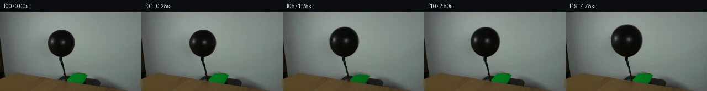
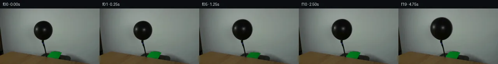
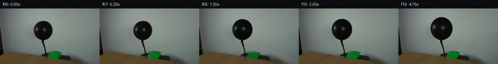
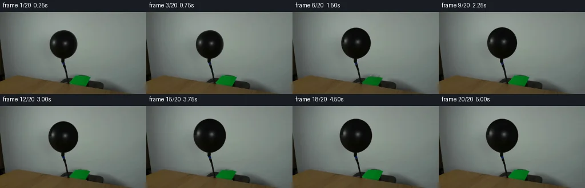
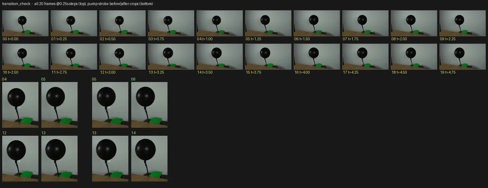

V0 · 初版
2026-11-05T21:50:34.391135+00:00 · RGB f4b5a497cee8
![]()
Observable Generation Trace
把最终像素视频、Harness 冻结的每轮候选、真实工具事件和 Agent 自述放在同一页。可观测证据与模型自述分开标记，避免把“模型说它检查过”误当成真实工具调用。
![首帧]()
Static locked-off single-shot with fixed frame throughout filmed with constant framerate in real-time. The scene shows a realistic scientific demonstration. The scene only contains the described setup and actions. The balloon is attached to a black hose that points upwards from behind a wooden table. Air is being pumped into the black balloon.
首帧显示在左侧播放器初始画面。Track 权限、隔离和 tensor 一致性来自 run manifest，而不是 METHOD.md。
默认勾选初版和最终版；可选其他版本一起同步播放。仅检查图更新的连续重复快照已合并，回退旧视频仍保留为一次修订。
Observable events
来源：events.jsonl + run manifest
events.jsonl 可验证该 Agent 成功读取了 20 张 PNG；上面的 round 图不等同于读取次数，而是 Harness 独立冻结的候选。
Frozen candidates
每张图来自该 round 的真实 00 / 01 / 05 / 10 / 19 帧

pixels 913505ae5932b77e · code 454bcecea2fffa7a
--- previous/generate.py
+++ current/generate.py
@@ -0,0 +1,212 @@
+"""PixelWorld case 0039: air being pumped into a black balloon on an upward hose.
+
+Local pixel operations only. Frame 0 is an exact copy of first_frame.png.
+Balloon: data-driven coverage/intrinsic-color matte of the frame-0 ellipse, then
+per-frame similarity scaling about the fixed mouth anchor with damped elastic
+response to two pump strokes; green bellows panel squashes in sync.
+See METHOD.md for the full description.
+"""
+import shutil
+import numpy as np
+from PIL import Image
+
+import artifact_io
+
+rng = np.random.default_rng(7)
+
+# ---------------------------------------------------------------- geometry --
+F0 = np.array(Image.open('first_frame.png').convert('RGB')).astype(np.float64)
+H, W = F0.shape[:2]
+assert (H, W) == (144, 256)
+
+CX0, CY0, A0, B0 = 110.848, 56.354, 23.921, 24.874 # fitted balloon ellipse
+PX, PY = 110.7, 81.2 # mouth anchor on nozzle
+
+yy, xx = np.mgrid[0:H, 0:W]
+pcx, pcy = xx + 0.5, yy + 0.5
+rho = np.sqrt(((pcx - CX0) / A0) ** 2 + ((pcy - CY0) / B0) ** 2)
+ang = np.arctan2((pcy - CY0) / B0, (pcx - CX0) / A0)
+lum = F0.mean(2)
+
+
+def bilinear(img, qx, qy):
+ qx = np.asarray(qx, dtype=np.float64)
+ qy = np.asarray(qy, dtype=np.float64)
+ x0i = np.floor(qx).astype(np.int64)
+ y0i = np.floor(qy).astype(np.int64)
+ fx, fy = qx - x0i, qy - y0i
+ x0 = np.clip(x0i, 0, W - 1); x1 = np.clip(x0i + 1, 0, W - 1)
+ y0 = np.clip(y0i, 0, H - 1); y1 = np.clip(y0i + 1, 0, H - 1)
+ wa = (1 - fx) * (1 - fy); wb = fx * (1 - fy); wc = (1 - fx) * fy; wd = fx * fy
+ if img.ndim == 3:
+ wa, wb, wc, wd = wa[..., None], wb[..., None], wc[..., None], wd[..., None]
+ return img[y0, x0] * wa + img[y0, x1] * wb + img[y1, x0] * wc + img[y1, x1] * wd
+
+
+# ---------------------------------------- frame-0 balloon matte / intrinsic --
+# Robust wall estimate: two definitely-outside rings sampled densely in angle,
+# median + gaussian smoothed along the ring, then radially interpolated.
+from scipy.ndimage import median_filter, gaussian_filter1d
+
+thv = np.radians(np.arange(-160, 161, 1.0))
+
+
+def wall_ring(scale):
+ samp = bilinear(F0, CX0 + scale * A0 * np.cos(thv), CY0 + scale * B0 * np.sin(thv))
+ samp = median_filter(samp, (7, 1))
+ return gaussian_filter1d(samp, 4, axis=0)
+
+
+R1, R2 = wall_ring(1.22), wall_ring(1.34)
+ti = np.clip(((np.degrees(ang) + 160) / 1.0).astype(int), 0, len(thv) - 1)
+fr = np.clip((rho - 1.22) / (1.34 - 1.22), -3.0, 1.0)[..., None]
+wall = np.clip(R1[ti] + (R2[ti] - R1[ti]) * fr, 0, 255)
+
+deep = bilinear(F0, CX0 + 0.55 * (pcx - CX0), CY0 + 0.55 * (pcy - CY0))
+alpha0 = np.clip((wall.mean(2) - lum) / np.maximum(wall.mean(2) - deep.mean(2), 6), 0, 1)
+alpha0[rho < 0.80] = 1.0
+alpha0[rho > 1.22] = 0.0
+# downward nozzle sector: analytic edge, nozzle stays put and is nearly black
+analytic = np.clip(0.5 + (1 - rho) / 0.05, 0, 1)
+blend = np.clip((ang - 1.45) / 0.16, 0, 1)
+alpha0 = alpha0 * (1 - blend) + analytic * blend
+
+# intrinsic balloon color: exact un-blend at real edge pixels, inward fallback
+af = np.maximum(alpha0[..., None], 0.12)
+K_un = (F0 - wall * (1 - af)) / af
+K_in = bilinear(F0, CX0 + 0.85 * (pcx - CX0), CY0 + 0.85 * (pcy - CY0))
+K = np.where(alpha0[..., None] > 0.12, K_un, K_in)
+K = np.clip(K, 0, 255)
+
+# ----------------------------------------------------- bellows background ---
+# green panel soft coverage
+greenness = F0[..., 1] - np.maximum(F0[..., 0], F0[..., 2]) - 6.0
+panel_a = np.clip(greenness / 26.0, 0, 1)
+panel_a *= ((xx > 116) & (xx < 164) & (yy > 107) & (yy < 134))
+panel_a = gaussian_filter1d(gaussian_filter1d(panel_a, 0.8, axis=0), 0.8, axis=1)
+panel_a = np.clip(panel_a, 0, 1)
… diff truncated; 125 more lines …
pixels e152696fd5cef9d1 · code 82320afaabc320b3
--- previous/generate.py
+++ current/generate.py
@@ -112,38 +112,40 @@
# ------------------------------------------------------------- motion model --
STROKE_AT = (4.5, 12.5) # frame index of each downstroke
SCALE_AFTER = (1.090, 1.180) # settled scale after each stroke
-FREQ = 0.55 # elastic oscillation, cycles per frame (2.2 Hz)
-TAU = 2.2 # damping in frames
+
+
+def _smooth(x):
+ x = np.clip(x, 0, 1)
+ return x * x * (3 - 2 * x)
def base_scale(i):
+ # volume steps spread over ~2 frame intervals so the 4 fps sampling is smooth
s = 1.0
for k, m in enumerate(STROKE_AT):
- x = np.clip((i - (m - 0.5)) / 1.0, 0, 1) # step across one frame interval
- x = x * x * (3 - 2 * x)
+ x = _smooth((i - (m - 1.0)) / 2.0)
prev = SCALE_AFTER[k - 1] if k else 1.0
s += (SCALE_AFTER[k] - prev) * x
return s
def elastic(i):
- """Return (breath, wobble2, sway) from damped oscillations after strokes."""
+ """Single smooth pressure kick per stroke: (breath, wobble2, sway)."""
breath = wob = sway = 0.0
for m in STROKE_AT:
- h = i - m
- if h >= -0.5:
- # oscillation starts at the downstroke; no response before it
- hh = max(h, 0.0)
- env = np.exp(-hh / TAU)
- osc = np.sin(2 * np.pi * FREQ * (hh + 0.12))
- breath += 0.012 * env * osc
- wob += 0.005 * env * np.cos(2 * np.pi * FREQ * hh + 0.6)
- sway += 0.85 * env * np.sin(2 * np.pi * FREQ * hh + 0.35)
+ h = i - (m - 0.5)
+ if h > 0:
+ rise = (1 - np.exp(-h / 0.35))
+ env = np.exp(-h / 2.6)
+ e = rise * env
+ breath += 0.008 * e
+ wob += 0.0035 * e
+ sway += 0.45 * e
return breath, wob, sway
# bellows press amount per frame (0..1): downstroke then recovery
-PRESS = {4: 0.45, 5: 1.0, 6: 0.55, 11: 0.30, 12: 0.75, 13: 1.0, 14: 0.55}
+PRESS = {4: 0.5, 5: 1.0, 6: 0.45, 11: 0.25, 12: 0.6, 13: 1.0, 14: 0.45}
PANEL_PIVOT = 130.0
@@ -160,13 +162,8 @@
a = bilinear(panel_a, qx, qy)
col = bilinear(F0, qx, qy)
col *= (1.0 - 0.10 * pr) # pressed bellows slightly darker
- sub = frame[pby0:pby1, pbx0:pbx1]
bg = plate[pby0:pby1, pbx0:pbx1]
- sub2 = sub * (1 - a[..., None]) + col * a[..., None]
- # where the panel recedes, the inpainted background shows instead of F0
- reveal = a < bilinear(panel_a, qx, qy + 1.2) # keep simple: always plate under
- sub2 = bg * (1 - a[..., None]) + col * a[..., None]
- frame[pby0:pby1, pbx0:pbx1] = sub2
+ frame[pby0:pby1, pbx0:pbx1] = bg * (1 - a[..., None]) + col * a[..., None]
# ---- balloon ----
s = base_scale(i)
@@ -190,9 +187,17 @@
rq = rrn / np.maximum(1.0 + delta, 0.5)
qx = CX0 + A0 * rq * np.cos(phi)
qy = CY0 + B0 * rq * np.sin(phi)
- m = (rq < 1.30)
+ m = (rq < 1.28)
a = np.zeros_like(rrn)
- a[m] = bilinear(alpha0, qx[m], qy[m])
+ # sample coverage on a radius-compressed band so the AA width stays
+ # ~constant in screen pixels instead of softening as the ellipse grows
+ rqa = 1.0 + (rq - 1.0) / (s * 0.90)
+ qxa = CX0 + A0 * rqa * np.cos(phi)
+ qya = CY0 + B0 * rqa * np.sin(phi)
+ a[m] = bilinear(alpha0, qxa[m], qya[m])
+ # nothing balloon below the mouth line: the static nozzle stays intact
+ mouth = np.clip((PY + 0.9 - (ys + 0.5)) / 1.4, 0, 1)
+ a *= mouth
… diff truncated; 3 more lines …pixels e152696fd5cef9d1 · code 82320afaabc320b3
No generate.py text change in this frozen round.
pixels 1e33acd49f749fc3 · code de2b82a85714c99f
--- previous/generate.py
+++ current/generate.py
@@ -185,20 +185,19 @@
# inverse elastic normal displacement (m=2 elliptical mode)
delta = wob * np.cos(2 * (phi - 0.4))
rq = rrn / np.maximum(1.0 + delta, 0.5)
- qx = CX0 + A0 * rq * np.cos(phi)
- qy = CY0 + B0 * rq * np.sin(phi)
- m = (rq < 1.28)
- a = np.zeros_like(rrn)
- # sample coverage on a radius-compressed band so the AA width stays
- # ~constant in screen pixels instead of softening as the ellipse grows
- rqa = 1.0 + (rq - 1.0) / (s * 0.90)
- qxa = CX0 + A0 * rqa * np.cos(phi)
- qya = CY0 + B0 * rqa * np.sin(phi)
- a[m] = bilinear(alpha0, qxa[m], qya[m])
+ # analytic coverage with constant screen-space AA width (half coverage
+ # at the measured ellipse); keeps the rim crisp as the balloon grows
+ wnorm = 1.25 / At
+ a = np.clip(0.5 + (1.0 - rrn) / wnorm, 0, 1)
+ a[rrn > 1.30] = 0
# nothing balloon below the mouth line: the static nozzle stays intact
mouth = np.clip((PY + 0.9 - (ys + 0.5)) / 1.4, 0, 1)
a *= mouth
- kcol = bilinear(K, qx, qy)
+ # intrinsic color sampled from the stable interior only (<=0.93 radius)
+ rqk = np.minimum(rq, 0.93)
+ qkx = CX0 + A0 * rqk * np.cos(phi)
+ qky = CY0 + B0 * rqk * np.sin(phi)
+ kcol = bilinear(K, qkx, qky)
# faint overall brightness breathing of the skin under pressure pulses
kcol = kcol * (1.0 + 0.05 * breath)
sub = frame[ylo:yhi, xlo:xhi]pixels 1e33acd49f749fc3 · code de2b82a85714c99f
No generate.py text change in this frozen round.
pixels 7edbf2d0c0c35888 · code 3c29c0cbe4fad4d3
--- previous/generate.py
+++ current/generate.py
@@ -200,7 +200,15 @@
kcol = bilinear(K, qkx, qky)
# faint overall brightness breathing of the skin under pressure pulses
kcol = kcol * (1.0 + 0.05 * breath)
- sub = frame[ylo:yhi, xlo:xhi]
+ # background plate inside the bbox: frame-0 balloon analytically rebuilt
+ # over the wall model, so a barely-grown rim never ghosts against the
+ # old rim; nozzle sector stays untouched (both masks vanish there)
+ sub = frame[ylo:yhi, xlo:xhi].copy()
+ a_old = np.clip(0.5 + (1.0 - rho[ylo:yhi, xlo:xhi]) / (1.25 / B0), 0, 1)
+ a_old *= np.clip((PY + 0.9 - (ys + 0.5)) / 1.4, 0, 1)
+ bg_old = (wall[ylo:yhi, xlo:xhi] * (1 - a_old[..., None]) +
+ K[ylo:yhi, xlo:xhi] * a_old[..., None])
+ sub = sub * (1 - a_old[..., None]) + bg_old * a_old[..., None]
frame[ylo:yhi, xlo:xhi] = sub * (1 - a[..., None]) + kcol * a[..., None]
return np.clip(frame, 0, 255).astype(np.uint8)pixels 7edbf2d0c0c35888 · code 3c29c0cbe4fad4d3
No generate.py text change in this frozen round.

pixels 5151bf91e32e312d · code 24ad7b4f4524a906
--- previous/generate.py +++ current/generate.py @@ -87,27 +87,23 @@ panel_a = np.clip(panel_a, 0, 1) pbx0, pbx1, pby0, pby1 = 115, 165, 106, 135 -# local inpaint of the background behind the panel (diffusion from known rim) +# local inpaint of the background behind the panel: nearest-known-pixel fill +# (geodesic from the real rim colors) so a revealed top strip keeps the dark +# housing/shadow band instead of washing out toward the wall color +from scipy.ndimage import distance_transform_edt plate = F0.copy() hole = panel_a > 0.18 work = np.zeros((H, W), bool) work[pby0:pby1, pbx0:pbx1] = True hole &= work -known = work & ~hole -acc = F0.copy() -acc[hole] = 0.0 -wacc = known.astype(np.float64) -for _ in range(140): - num = (np.pad(acc, ((1, 1), (1, 1), (0, 0)))[0:-2, 1:-1] + - np.pad(acc, ((1, 1), (1, 1), (0, 0)))[2:, 1:-1] + - np.pad(acc, ((1, 1), (1, 1), (0, 0)))[1:-1, 0:-2] + - np.pad(acc, ((1, 1), (1, 1), (0, 0)))[1:-1, 2:]) - den = (np.pad(wacc, 1)[0:-2, 1:-1] + np.pad(wacc, 1)[2:, 1:-1] + - np.pad(wacc, 1)[1:-1, 0:-2] + np.pad(wacc, 1)[1:-1, 2:]) - fill = work & ~known & (den > 0) - acc[fill] = num[fill] / np.maximum(den[fill], 1e-6)[..., None] - wacc[fill] = 1.0 -plate[hole] = acc[hole] +known = ~hole +_, (iy, ix) = distance_transform_edt(hole, return_indices=True) +plate[hole] = F0[iy[hole], ix[hole]] +# one light smoothing pass over the inpainted zone only +sm = hole & np.roll(hole, 1, 0) & np.roll(hole, -1, 0) +mean = (plate + np.roll(plate, 1, 0) + np.roll(plate, -1, 0) + + np.roll(plate, 1, 1) + np.roll(plate, -1, 1)) / 5 +plate[sm] = mean[sm] # ------------------------------------------------------------- motion model -- STROKE_AT = (4.5, 12.5) # frame index of each downstroke
pixels 5151bf91e32e312d · code 24ad7b4f4524a906
No generate.py text change in this frozen round.
Final visual checks
Harness 保存的最终产物


Agent claims
以下文字由生成 Agent 撰写，不等同于工具证据
first_frame.png: 256×144 RGB, uint8. Camera locked off; one static wide shot of a wall corner, a wooden table edge in the foreground, and a black balloon on an upward hose standing behind the table.C0 = (110.85, 56.35)A0 = 23.92, vertical semi-axis B0 = 24.87 (fit RMS 0.18 px, max 0.42 px)P = (110.8, 81.2)Physics choices: inflation happens through pump strokes, so volume grows in two discrete steps (two strokes within 5 s) rather than linearly; each injection is followed by one smooth, damped elastic pressure kick of the rubber skin (radius breathing + m=2 elliptical wobble + tiny lateral sway); the green bellows compresses in sync with each stroke and recovers. The mouth anchor P stays fixed at the nozzle; the ellipse center rises as the balloon grows.
A=s·A0, B=s·B0, center C = P + s·(C0−P) (+ tiny x sway).e(h) = (1−exp(−h/0.35))·exp(−h/2.6) with h in frames since the kick; drives uniform radius breathing amplitude 0.8% and m=2 wobble 0.35% (peaks ~0.5% one frame after the downstroke) plus lateral sway amplitude 0.45 px (peak ~0.3 px); the envelope tail is below 0.05 amplitude by ~7 frames.sy = 1−0.12·press of the green panel about its bottom edge (top edge dips ≤2.2 px), pressed color darkened 10%; press schedule 0.5/1.0/0.45 across the three frames of each stroke; newly exposed strip filled with a nearest-known-pixel inpaint of the dark housing/shadow band.Kick amplitude e is the value of the damped pressure-kick envelope on that frame (scale factors at peak e=1: radius breath 0.8%, m=2 wobble 0.35%, lateral sway 0.45 px); the base scale ramps on a 2-frame smoothstep, so f4/f12 are the downstroke frames themselves.
| i | t (s) | s (base) | kick e (breath / sway) | bellows press | visible event |
|---|---|---|---|---|---|
| 0 | 0.00 | 1.000 | 0 | 0 | exact first frame |
| 1 | 0.25 | 1.000 | 0 | 0 | unchanged (pre-stroke) |
| 2 | 0.50 | 1.000 | 0 | 0 | unchanged |
| 3 | 0.75 | 1.000 | 0 | 0 | unchanged |
| 4 | 1.00 | 1.014 | 0 | 0.5 | stroke 1 downstroke: panel half-compressed, balloon starts growing |
| 5 | 1.25 | 1.076 | 0.64 (breath +0.5%, sway +0.29 px) | 1.0 | balloon near step-1 size, kick peaks, panel flat |
| 6 | 1.50 | 1.090 | 0.46 | 0.45 | step-1 size reached, panel recovering |
| 7 | 1.75 | 1.090 | 0.32 | 0 | residual settle |
| 8 | 2.00 | 1.090 | 0.21 | 0 | faint breathing |
| 9 | 2.25 | 1.090 | 0.15 | 0 | near hold |
| 10 | 2.50 | 1.090 | 0.10 | 0 | stillness before stroke 2 |
| 11 | 2.75 | 1.090 | 0.07 | 0.25 | panel begins compressing |
| 12 | 3.00 | 1.104 | 0.05 | 0.6 | stroke 2 downstroke, balloon starts step-up |
| 13 | 3.25 | 1.166 | 0.67 (breath +0.5%, sway +0.30 px) | 1.0 | near step-2 size, kick peaks, panel flat |
| 14 | 3.50 | 1.180 | 0.48 | 0.45 | final size reached, panel recovering |
| 15 | 3.75 | 1.180 | 0.33 | 0 | residual settle |
| 16 | 4.00 | 1.180 | 0.22 | 0 | faint breathing |
| 17 | 4.25 | 1.180 | 0.15 | 0 | near hold |
| 18 | 4.50 | 1.180 | 0.10 | 0 | near hold |
| 19 | 4.75 | 1.180 | 0.07 (sway +0.03 px) | 0 | final inflated size |
first_frame.png; all edits are local Python/numpy/scipy/PIL pixel operations.Case 0039 — "Air is being pumped into the black balloon."
All work is local Python pixel operations (numpy / scipy.ndimage / PIL) on the single
input first_frame.png. No external models, network, or other assets are used.
The generator is generate.py; run python3 generate.py to (re)create every
output artifact through the provided artifact_io.save.
The 256×144 frame contains, back to front: a grey-green wall with a dark left corner, a wooden table edge across the lower third, a dark pump housing behind the table, a bright green bellows panel on the pump, a black hose rising from it with a blue collar, and a near-black inflated balloon tied to the hose top. Camera and exposure are static, so every non-balloon / non-bellows pixel is kept bit-identical to frame 0.
The balloon silhouette is a slightly prolate ellipse with the mouth at the bottom. Half-coverage edge points were measured over the visible polar range (−140°…+82°; the downward sector is occluded by the nozzle) and fitted by least squares to
C0 = (110.848, 56.354), semi-axes A0 = 23.921 (x), B0 = 24.874 (y)
(fit RMS 0.18 px, max 0.42 px);P = (110.7, 81.2) on the nozzle.Interior skin is nearly black (~RGB 10) with a faint central glow, two soft specular spots near (94,56) and (114,56), and a faint greenish lower-right limb.
To re-render the balloon at other sizes we need (a) the background color behind it and (b) its intrinsic skin color, at every frame-0 balloon pixel.
Wall model. Two densely sampled rings just outside the ellipse (ρ = 1.22 and 1.34, with ρ the normalized ellipse radius of the pixel center) are bilinearly sampled from frame 0, run through a length-7 median filter and a σ=4 Gaussian along the angle, then linearly interpolated radially to each pixel. The median/Gaussian steps remove the dark left-corner gradient and isolated dark pixels from the estimate.
Coverage matte α₀. At each pixel, balloon coverage is recovered by luminance un-blending:
α = clip((L_wall − L) / (L_wall − L_deep), 0, 1),
L_deep = luminance(F0 sampled at 0.55·radius)
pinned to 1 for ρ < 0.80 and 0 for ρ > 1.22. In the downward nozzle sector
(angle > 1.45 rad) an analytic edge clip(0.5 + (1−ρ)/0.05, 0, 1) is blended
in, because the un-blend assumption fails where the nearly-black nozzle meets
the nearly-black balloon. As a calibration self-test, this matte reproduces the
frame-0 balloon band with mean |error| 0.46/255, max 4.
Intrinsic color K. Where α₀ > 0.12 the skin color is obtained by exact
inverse compositing, K = (F0 − wall·(1−α)) / α; elsewhere K falls back to the
frame-0 color sampled at 0.85 of the pixel's radius (real interior skin, never
the rim). K is clipped to [0,255].
Air arrives through two hand-pump strokes within the 5 s window; inflation is therefore stepwise rather than linear.
Base scale about the fixed mouth anchor P (the tied neck cannot move):
semi-axes A = s·A0, B = s·B0, center C = P + s·(C0 − P), so the center
rises as the balloon grows. Each stroke adds its scale increment through a
2-frame smoothstep centered at frame index 4.5 (settles at s = 1.090) and
12.5 (settles at s = 1.180). Effective per-frame base scales:
f0–3 1.000, f4 1.014, f5 1.076, f6–11 1.090, f12 1.104, f13 1.166, f14–19
1.180. At 1.18 the top reaches y ≈ 22.6 and flanks x ≈ 77/145, comfortably
inside the frame.
One damped elastic pressure kick per stroke, starting half a frame after the downstroke:
e(h) = (1 − exp(−h/0.35)) · exp(−h/2.6), h = frames since kick
driving a uniform radius breathing (amp 0.008), an m=2 elliptical normal
perturbation δ = 0.0035·e·cos(2(φ−0.4)), and a lateral center sway
(0.45·e px). The kick peaks on the frame after each downstroke (e ≈ 0.64) and
its tail is below 0.1 amplitude within ~6 frames. Skin color is brightened by
at most 5%·breath during the pulse.
Bellows press schedule (fraction pressed): f4 0.5, f5 1.0, f6 0.45; f11 0.25, f12 0.6, f13 1.0, f14 0.45; 0 elsewhere. The panel starts moving one frame before the balloon's step-up completes and is fully released two frames after each downstroke.
α = clip(0.5 + (1 − ρ_t)/w, 0, 1) with
w = 1.25/A_t, so the anti-aliased band keeps a constant ~1.25 px width on
screen at every size (half coverage exactly on the fitted ellipse). The m=2
perturbation only affects color sampling, not the coverage silhouette.clip((P_y + 0.9 − y)/1.4, 0, 1); balloon
coverage ends ~1.4 px above the anchor so the nozzle, blue collar and hose
are never painted. A numeric check confirms zero changed pixels in the hose
bbox (x 100–125, y 82–106) on every frame.wall·(1−α_old) + K·α_old using the
frame-0 analytic rim (with the same mouth fade). This removes the old dark
rim from the thin crescent exposed by growth; without it the grown balloon
showed a faint doubled outline.out = plate·(1−α) + K_t·α over the bbox only.G − max(R,B) − 6, restricted to
x 117–163 / y 108–133 and smoothed (σ 0.8 in each axis).distance_transform_edt indices,
then one 5-neighbor averaging pass is applied over the fully-interior fill.
Nearest-pixel fill (rather than a blur/inpaint toward wall color) preserves
the dark pump-housing/shadow band revealed above a squashed panel.s_y = 1 − 0.12·press, top edge dips ≤ 2.2 px) by inverse bilinear sampling
of both its color and alpha, its color darkened by 10%·press, and composited
over the plate inside the small panel bbox.Everything outside the two render bboxes is a direct copy of frame 0.
frames[0] is replaced with a fresh decode of first_frame.png, and
frames/00.png is additionally byte-copied from first_frame.png, so frame 00
is exactly the supplied PNG (md5 verified equal). artifact_io.save writes the
20 PNGs, the uint32 0xRRGGBB tensor pixels.npz, inspection.png (frames
0/2/5/8/11/14/17/19) and index.html from the player template.
transition_check.png is produced separately by .tmp/make_checks.py: a
2×10 half-size strip of all 20 labeled frames plus full-resolution
before/after crops of the four stroke transitions (04→05, 05→06, 12→13, 13→14).
frames/00.png byte-identical to first_frame.png (md5 match).frames/NN.png re-decodes to exactly the packed uint32 tensor stored in
pixels.npz; tensor shape (20,144,256,3)-equivalent, dtype/contract per
artifact_io.transition_check.png.